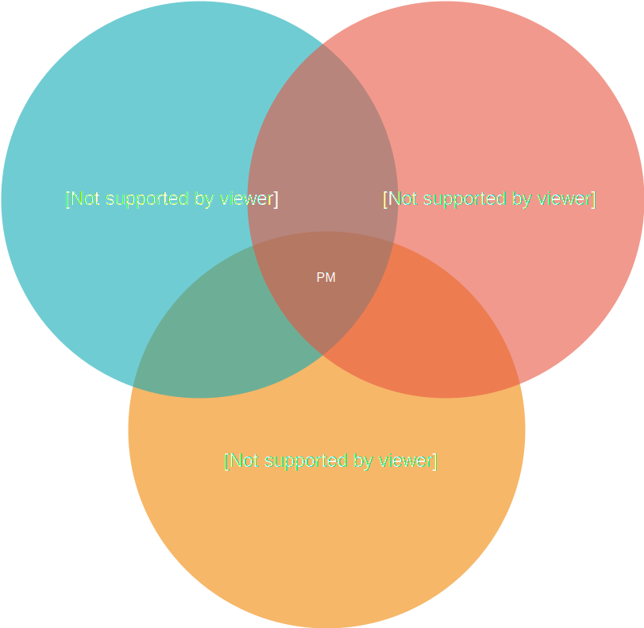

What is Product Management?
Job of the product manager is to discover a product that is valuable, usable and feasible - Marty Cagan
Management is learned skill. Nobody was born a great manger - Ben Horowitz
It is easy to teach an innovator to become a CEO than teach a CEO to become an innovator - Ben Horowitz
 image credit: Chromecast
image credit: Chromecast
Solving the great customer problem with the balancing the needs of:
-
UX - usable
- Product Manager is the voice of the user inside the business and must be passionate about the user experience.
- Not being a pixel pusher or a designer
- Need to be out there testing the product, talking to users and getting that feedback first hand
-
Biz - meeting needs - valuable
- focused on maximizing business value from a product
- should be obsessed with optimizing a product to achieve the business goals while maximizing return on investment (ROI)
-
Tech - feasible
- There’s no point defining what to build if you don’t know how it will get built.
- Understanding the level of effort (LOE) involved is crucial to making the right decisions
A good product manager must be experienced in at least one, passionate about all three, and conversant with practitioners in all.
Martin Eriksson's Venn Diagram

- Empowering the team by providing product owner like responsibilities
- Trade-off decision maker
A Good Product Manager plays critical role in a successful product
- A successful product is the highest impact contribution that anyone can make in the Product Development organization
- Track record of successful products that become profitable businesses for their company.
CEO of the product (influencing without any authority)
| Good | Bad |
|---|---|
| drives vision and are ultimately responsible for the product's success or failure. | think of themselves as marketing resources |
| have a realistic vision of what success of their product means and they ensure that this vision becomes reality - whatever it takes | have lots of excuses, like blaming Engineering manager... |
| viewed as the leader of the product by the entire product team | when they fail, they point out that: they predicted they would fail |
Balance all important factors
Company goals & capabilities
| Good | Bad |
|---|---|
| take all important factors into consideration | |
| understand and balance a wide variety of factors that affect product strategy and execution | |
| understand the capabilities and limitations of their overall company | |
| knows approximately how much and what kind of marketing resources the company will spend on these products. Don't always know the answer to these questions, but they know enough to ask when they don't. | build a product that will take too long to pay off |
Customer demand
| Good | Bad |
|---|---|
| listen to customers but they probe deeper into the underlying problems to get at the compelling value proposition for the customer. If you had a noisy car you might ask for a louder stereo, but you would probably be a lot happier with a quieter car | ask customers leading questions and get biased answers. Go on their instinct and "confirm" it with two unusual customers |
| also know what customers can & will pay for | build a good product for a market their company isn't in |
| certain that if they build a certain product, customers will buy it. | build a product that's too complex for their company to sell. Aren't savvy or confident enough to distinguish between interest. Blindly listen to the loudest customers, and define a product that addresses yesterday's needs of a handful of companies.and commitment to buy. Compare future products to today's competition, or cite advantages |
| customers don't care about. | |
| go the extra mile to make sure they get this right |
Understanding competition
| Good | Bad |
|---|---|
| understand the architectural and business capabilities of the competition and know where the competitors can go easily and can't go at all. Also know they must be better or different (integration/distribution) or they're dead. | react only to the moves of their competitors and forget to develop their own |
| product's identity, letting it be just a hodge podge of what the competition is not doing |
Know what you know and what you do not know
| Good | Bad |
|---|---|
| acutely aware of what they know and why they know it, as well as what they don't know. | |
| understands the difference between opinions, hunches, and objective facts. | |
| knows that their job is to fill in these gaps in knowledge, not to defend or obfuscate them. | |
| doesn't ruin their credibility by over-stating their knowledge. | try to defend their lack of knowledge |
| rather than gain the knowledge |
Think ahead and monitor your assumptions
| Good | Bad |
|---|---|
| know what their important assumptions are and they monitor them from time to time to make sure they still hold | have blinders on and don't notice when things change and notice only when their product fails. |
| re-evaluate the assumption as soon that assumption is threatened. | |
| actively confirm their understanding with their managers and others on their team |
Clear written communication
| Good | Bad |
|---|---|
| define clearly and in as much detail as is necessary what the product should do, how fast it should be, etc. | cut corners on communication with engineering or misunderstand their role. |
| don't forget to specify critical information. | |
| willing to explain the obvious to make sure it's understood. | |
| specify the whole product, including release criteria, platforms, etc., not only the new features | |
| sense and tackle hard issues - in writing - early in the development process. | |
| production information based on research, information and a logical, transparent | |
| thought process that the entire team buys into | |
| know that engineers are scientists by nature and value data much more than opinion. other | |
| parts of PD (QA, Doc, etc.) should be involved in that process. | |
| define a clear product vision and target that empowers engineering to fill in the details that are difficult to specify or anticipate. | |
| explain why engineering should build a particular product a particular way. | They want light and ask for a candle when their engineers could have built a light bulb. |
| respected by their engineering teams. Engineering teams involve good product managers in difficult decisions. | |
| Written communication to engineering is superior because it is more consistent across an entire product team, it is more lasting, it raises accountability. | put off hard decisions until the end of the product cycle |
| attend product team meetings regularly and make sure they're around when engineering is making tradeoffs. | change engineering priorities based on the latest customer feedback or latest hot sales situation without going through the defined process |
- Good test for a good PM:
- Someone outside the product team to ask 5 different people in engineering, QA, and doc what their product is supposed to do and why and get the same answer.
Product Requirements Document (PRD) is a big deal
- The PRD is the single most important document the product manager maintains and in most cases should be the definitive source of direction from marketing to engineering
| Good | Bad |
|---|---|
| keep PRDs up-to-date daily or weekly at a minimum. Good product managers view the entire PRD process as a living ongoing process, because it is (engineering has new questions, market conditions change, etc.). If anything changes in the PRD, a good product manager communicates the change clearly to the entire product team | write a PRD and assume engineering understands it. |
| don't rest until they are sure that the product vision is consistent across product management, engineering, QA, tech pubs, and support and is reflected in the PRD. They don't rest, because they know that no great product ever emerged from a broad set of conflicting visions | managers don't have time to update their PRD. update the PRD and don't tell anyone, or don't tell enough people, or don't explain why. |
Clear goals and advantages
| Good | Bad |
|---|---|
| Good product managers have clear goals | have mushy goals and mushy product advantages. |
| re-evaluate the assumption as soon that assumption is threatened. | |
| define success as achieving explicit goals. Goals that are important are written down. | |
| have written goals for their product and for their own personal objectives | have inconsistent product positioning and advantages change from time to time |
| know how their product will be better / different than the competition - a key part of the overall product vision from day one and is reflected in most things the product manager does | hesitate when asked for the advantages of their product. |
Focus on the sales force and customers
| Good | Bad |
|---|---|
| good product manager will be known personally or by reputation by at least half the sales force. | |
| know that sales people have a choice of products to sell and, at a higher level, companies to work for, and selling a particular product manager's product is optional | |
| focus on and understand that sales people are under a lot of pressure to make their quota, this quarter | |
| Knowledgeable of what actually happens in the field. Does not rambles on about their product features that does not help sales person's current situation | don't have time for the salesforce or customers |
| been out in the field, been to sales training, been to SE training, been to pitches, etc. | aren't sure what's going on in the field, delegate working with sales. |
| A good presenter, Responsive | boring presenters.talk about how future products will be great, but the current products are weak |
| know a handful of current and potential customers personally | don't care about individual customers |
| understand the exact dynamics of real customer situations.leverage this knowledge with engineering, other customers, the salesforce, press and analysts, etc. |
Other key skills
Marketing & communication
| Good | Bad |
|---|---|
| requires an understanding of and proficiency in though not deep expertise of a wide array of marketing functions. | |
| good product managers should be able to work effectively with PR and press and analysts, understand how to execute a product launch, develop collateral, staff a tradeshow, train the salesforce, etc. | |
| knows the importance of creating leveragable collateral, FAQs, presentations, white papers. | If your primary competitor is abc and the most recent competitive positioning on abs is nine months old and refers to the last release of their product, this is indicative of a bad product manager. |
| take competition into account in developing their messages, but are not a slave to what the competition does. |
Time management and sense of what's important
| Good | Bad |
|---|---|
| focuses on tasks that are critical to their product success | put out fires all day |
| focuses on tasks that have a high impact on their business (closing big deals, updating their PRD, etc.) | complain that they spend all day answering questions for the sales force and are swamped |
| tasks that have a high impact on their business (closing big deals, updating their PRD, etc.) | don't create FAQs or other leveragable collateral. |
Discipline
| Good | Bad |
|---|---|
| respect a base level of discipline and organization in their work. | |
| keep their project up-to-date | |
| send their status reports in on time every week, because they are disciplined. | forget to send in their status reports on time, because they don't value discipline. |
| don't over-promise. | |
| keep developers doing product development | |
| don't offer engineering resources for things that can and should be handled by sales or marketing | |
| Work well with executives. | |
| Leverage the entire organization | |
| Use whatever intensity is required to close critical issues. |
Management
Setting a vision of the product
-
requires you to research, research, and then research some more your market, your customer and the problem they have that you’re trying to solve.
-
assimilate huge amounts of information
- feedback from clients
- quantitative data from your analytics
- research reports
- market trends and statistics
-
need to know everything about:
- your market and your customer
- your customers’ problem, and then mix all that information with a healthy dose of creativity to define a vision for your product
Spread the word in your business
Once you have a vision, you have to spread the word in your business.
- Get dogmatic, evangelical even, about the utopia that is your product.
- Get passionate about it
- Your success, and that of your product, relies on:
- every team member — from sales to developer
Start building an actionable plan to reach that vision
-
A roadmap of incremental improvements and iterative development that take you step by faltering step closer to that final vision.
-
your team throw themselves into coming up with better designs, better code and better solutions to the customers problem alongside you.
-
solving problems as they pop up and closely managing scope so you can get the product out on time.
After Release
- Looking at how customers use the product
- Going out and talking to them about the product and generally eating, sleeping and breathing the product.
- Did you solve the right problem?
- Do your users get the product?
- Is it solving their problem? Will they pay for the product?